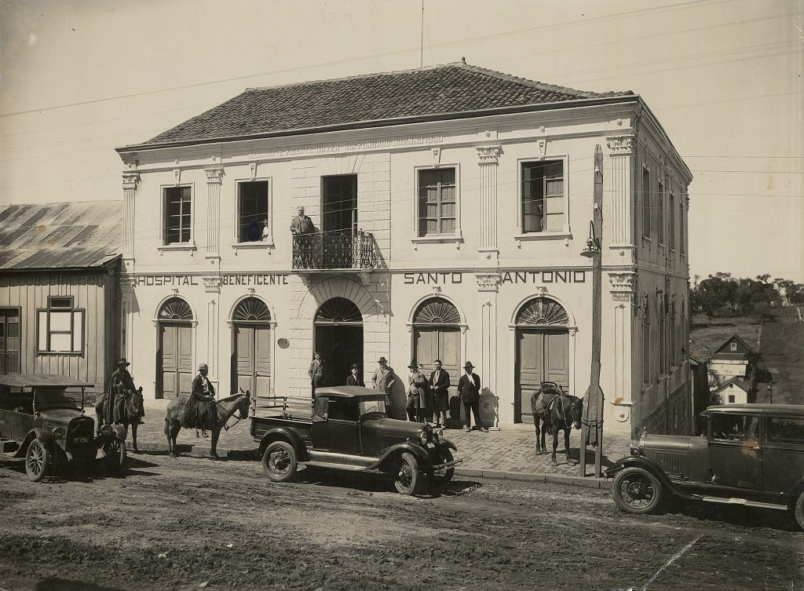
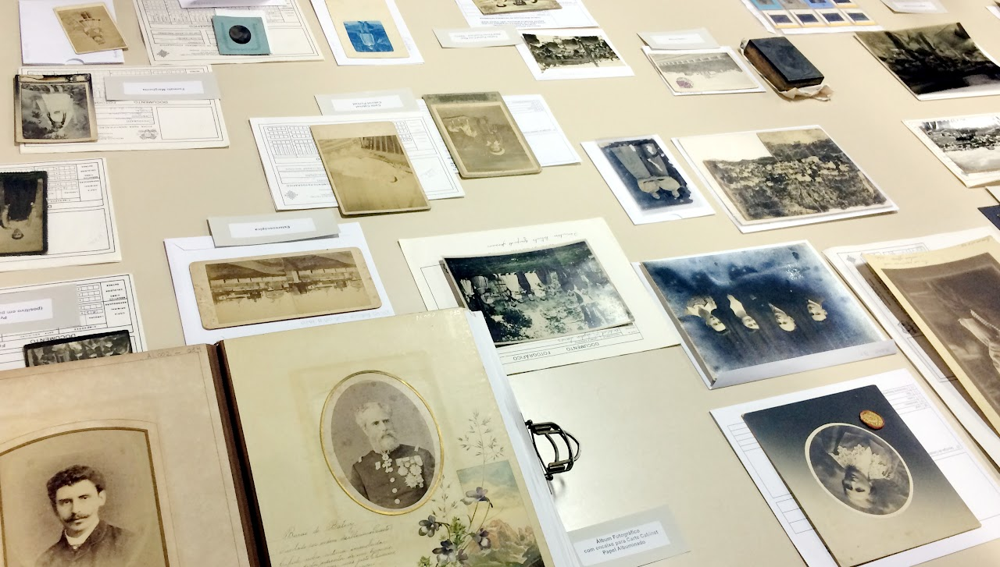
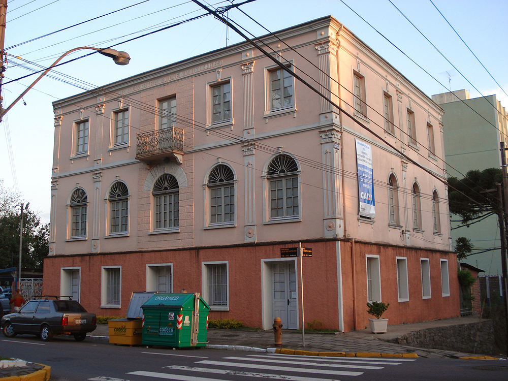

Temos disponíveis documentos de origem pública, revelando os múltiplos
aspectos da formação social e cultural de Caxias do Sul.
São fotografias, manuscritos e documentos oficiais, além de um banco de
memória oral, livros e outros itens, chegando a aproximadamente um milhão
de documentos de origem pública, 500 mil de origem particular, 600
depoimentos gravados, 5 mil livros, 300 periódicos e mais de 200 mil fotografias.
História
O Arquivo Histórico Municipal de Caxias do Sul foi oficialmente instituído em 5 de
agosto de 1976, por meio do Decreto nº 4047. Contudo, a formação de seu acervo teve
início em 1975, durante as celebrações do Centenário da Imigração Italiana. Inicialmente
vinculado ao Museu Municipal, o arquivo funcionou em um prédio anexo até 1996, enfrentando
sérios problemas estruturais.
Em 1979, diante da iminente demolição do prédio do antigo Hospital Carbone, o Museu e o
Arquivo Histórico Municipal iniciaram uma campanha para sua preservação, recebendo apoio
da comunidade. Como resultado, a área foi adquirida por 18 empresas que trocaram a edificação
por índices construtivos a serem utilizados no terreno remanescente. Essa permuta estabeleceu que
o prédio deveria ser destinado à guarda da documentação histórica do município.
O acervo do Arquivo Histórico, porém, só foi transferido para o referido espaço no final de
1996, quando o prédio ainda apresentava problemas estruturais, apesar das reformas já realizadas.
Somente podia-se ocupar o andar térreo e, parcialmente, o 1º andar.

Acervos Históricos

Composto, em sua maioria, de doações provenientes da comunidade caxiense, o acervo é formado por
documentos textuais e bibliográficos – cadernos de anotações, documentos pessoais, livros de registros,
correspondências, material de publicidade, entre outros, além de documentos iconográficos, em
diferentes suportes – negativos em vidro ou flexíveis, slides, álbuns fotográficos, fotografias em papel,
cartões-postais, desenhos, rótulos e cartazes impressos.
A produção dos fotógrafos que atuaram em Caxias do Sul desde os seus primórdios,
também compõe o acervo da Unidade, com destaque para o Fundo Studio Geremia, adquirido pelo Município em 2002.
Documentos iconográficos integrantes de alguns fundos documentais mantidos pela Unidade Arquivos Privados. Data: 2018. Crédito: Catiuscia Xavier.
Visitação

Horário de atendimento:
Segunda a Sexta-feira, das 10h às 16h (oferece horários alternativos de atendimento mediante agendamento e disponibilidade).
Endereço:
Avenida Júlio de Castilhos, nº 318 - Bairro Nossa Senhora de Lourdes.